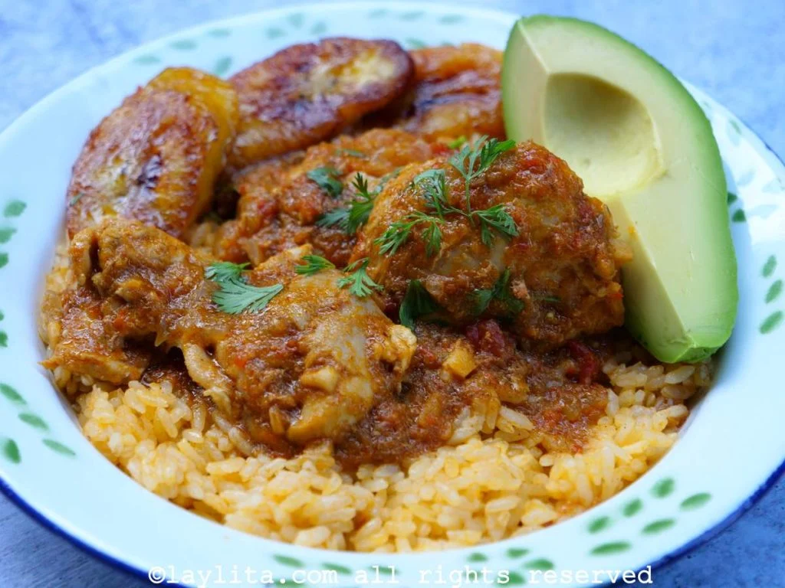

Ecuadorian Seco de Pollo

Description
This Ecuadorian classic is a stew of chicken, beer, naranjilla, tomatoes, aromatics, and savory spices that tastes just like childhood.
Ingredients
- 6 chicken thighs
- 1 clove garlic, minced
- 1 teaspoon ground black pepper
- 1 teaspoon ground cumin
- 1 teaspoon oregano
- 2 tablespoons vegetable oil
- ¾ (12 fluid ounce) can or bottle beer
- 1 tomato, quartered
- 1 red onion, quartered
- 1 bunch cilantro
Steps
- Season chicken thighs with garlic, black pepper, cumin, and oregano.
- Heat oil in a deep saucepan over medium-high heat; cook seasoned chicken until browned on both sides, about 5 minutes.
- Combine beer, tomato, red onion, and cilantro in a blender; blend until a smooth sauce forms. Pour sauce over chicken and reduce heat to low; simmer until chicken is very tender, 45 minutes to 1 hour.